산업위생관리산업기사 (2014-03-02 기출문제)
1과목: 산업위생학 개론
1. 우리나라의 산업위생역사를 볼 때 1990년대 초반 각종 직업성 질환의 등장은 사회적으로 커다란 반항을 일으켰다. 이 물질은 인조견사를 만드는데 쓰는 물질로서 특히 중추신경조직에 심각한 영향을 줌으로 많은 직업병 환자를 양산하게 되었던 이 물질은 무엇인가?
- 벤젠
- 톨루엔
- 이황화탄소
- 노말헥산
(정답률: 62%)

2. 다음 중 산업피로로 인한 생리적 증상과 가장 거리가 먼 것은 무엇인가?
- 맥박이 느려지고, 혈당치가 높아진다.
- 호흡은 얕아지고, 호흡곤란이 오기도 한다.
- 판단력이 흐려지고 지각기능이 둔해진다.
- 소변양이 줄고 진한 갈색으로 변하며 심한 경우 단백뇨가 나타난다.
(정답률: 70%)
3. 산업안전보건법령에서 산소결핍이란 공기 중의 산소 농도가 얼마 미만인 상태를 말하는가?
- 17%
- 18%
- 19%
- 20%
(정답률: 93%)
4. 다음 중 산업위생과 관련된 정보를 얻을 수 있는 기관으로 관계가 가장 적은 것은 무엇인가?
- EPA
- AIHA
- ACGIH
- OSHA
(정답률: 79%)
5. 10℃, 1기압에서 벤젠(C6H6) 10ppm을 mg/m3으로 환산할 경우 약 얼마인가?
- 28.7
- 30.6
- 33.6
- 35.7
(정답률: 60%)
6. 다음 중 산업재해의 기본원인인 4M에 해당하지 않는 것은 무엇인가?
- Man
- Management
- Media
- Method
(정답률: 76%)
7. 다음 중 실내공기 오염물질의 지표물질로서 가장 많이 이용되는 것은 무엇인가?
- 부유분진
- 이산화탄소
- 일산화탄소
- 휘발성유기화합물
(정답률: 77%)
8. 인간의 능력을 낭비 없이 발휘하면서 편하게 일을 할 수 있도록 동작경제의 원칙에 따라 작업 방법을 개선하고자 할 때 다음 중 동작경제의 3원칙에 해당하지 않는 것은 무엇인가?
- 작업비용 산정의 원칙
- 신체의 사용에 관한 원칙
- 작업장의 배치에 관한 원칙
- 공구 및 설비의 설계에 관한 원칙
(정답률: 82%)
9. 다음 중 교대제 근무가 생체에 주는 영향에 관한 설명으로 바르지 않은 것은?
- 야간작업시 주간작업보다 체온상승이 높으므로 작업능률이 떨어진다.
- 주간수면시 혈액수분의 증가가 충분치 않고, 에너지 대사량이 저하되지 않아 잠이 깊이 들지 않는다.
- 야간근무는 오래 계속하더라도 습관화되기 어려우며 야간근무를 3일 이상 연속으로 하는 경우에는 피로축적 현상이 나타나게 된다.
- 주간작업에서 야간작업으로 교대시 이미 형성된 신체리듬은 즉시 새로운 조건에 맞게 변화되지 않으므로 활동력이 저하된다.
(정답률: 72%)
10. 다음 중 NIOSH의 중량물 취급에 대한 기준에 있어 최대 허용기준（MPL)과 감시기준(AL)의 관계로 올바른 것은?
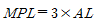
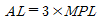
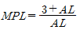
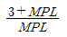
(정답률: 78%)
11. 다음 중 호기적 산화를 도와서 근육의 열량공급을 원활하게 해주기 때문에 근육노동에 있어서 특히 주의해서 보충해 주어야 하는 것은?
- 비타민 A
- 비타민 B1
- 비타민 C
- 비타민 D4
(정답률: 90%)
12. 다음 중 심리학적 적성검사 항목이 아닌 것은 무엇인가?
- 감각기능검사
- 지능검사
- 지각동작검사
- 인성검사
(정답률: 77%)
13. 다음 중 작업강도가 높아지는 요인으로 볼 수 없는 것은 무엇인가?
- 작업속도의 증가
- 작업인원의 감소
- 작업종류의 증가
- 작업변경의 감소
(정답률: 83%)
14. 다음 중 작업환경의 유해요인에 있어 물리적 요인에 해당하지 않는 것은 무엇인가?
- 진동
- 소음
- 고열
- 분진
(정답률: 55%)
15. 다음 중 영상표시단말기(VDT) 작업으로 인하여 발생되는 질환과 직접적으로 연관이 가장 적은 것은 무엇인가?
- 안(眼)장해
- 청력 저하
- 정신신경계 증상
- 경견완증후군 및 기타 근골격계 증상
(정답률: 61%)
16. 다음 중 산소결핍이 우려되고, 증기가 발산되는 유기화합물을 넣었던 탱크 내부에서 세척 및 페인트칠 업무를 하고자 할 때 근로자가 착용하여야 하는 보호구로 가장 적절한 것은 무엇인가?
- 위생마스크
- 방독마스크
- 송기마스크
- 방진마스크
(정답률: 83%)
17. 다음 중 산업피로의 방지대책으로 적당하지 않는 것은 무엇인가?
- 충분한 수면과 영양을 섭취하도록 한다.
- 작업 중 불필요한 동작을 피하고 에너지 소모를 적게한다.
- 휴식시간을 자주 갖는 것은 신체리듬에 부담을 주게 되므로 장시간 작업 후 장시간 휴식 하는 것이 효과적이다.
- 너무 정적인 작업은 피로를 가중시키므로 동적인 작업으로 전환한다.
(정답률: 88%)
18. 다음 물질이 공기 중에 완전 혼합되었다고 가정할 때 혼합물질의 노출지수는 약 얼마인가? (단, 각각의 물질은 서로 상가작용을 한다.)
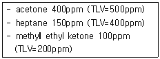
- 1.1
- 1.3
- 1.5
- 1.7
(정답률: 78%)
19. 산업안전보건법령상 작업환경측정기관의 지정이 취소된 경우 지정이 취소된 날부터 몇 년 이내에 관련 기관으로 지정받을 수 없는가?
- 1년
- 2년
- 3년
- 5년
(정답률: 50%)
20. 다음 중 미국산업위생학술원에서 채택한 산업위생전문가 윤리강령의 내용과 거리가 먼 것은 무엇인가?
- 기업체의 비밀은 누설하지 않는다.
- 위험요소와 예방조치에 관하여 근로자와 상담한다.
- 사업주와 일반 대중의 건강 보호가 1차적 책임이다.
- 전문적 판단이 타협에 의해서 좌우될 수 있으나 이해 관계가 있는 상황에서는 개입하지 않는다.
(정답률: 68%)
2과목: 작업환경측정 및 평가
21. 일정한 온도조건에서 부피와 압력이 반비례한다는 표준 가스 법칙은 무엇인가?
- 보일의 법칙
- 샤를의 법칙
- 게이의 법칙
- 루삭의 법칙
(정답률: 67%)
22. 허용기준 대상 유해인자의 노출 농도 측정 및 분석을 위한 화학시험의 일반사항 중 용어에 대한 내용으로 바르지 않은 것은? (단, 고용노동부 고시 기준)
- “회수율”이란 흡착제에 흡착된 성분을 추출과정을 거쳐 분석시 실제 검출되는 비율을 말한다.
- “진공”이란 따로 규정이 없는 한 15mmHg 이하를 뜻한다.
- 시험조작 중 “즉시”란 30초 이내에 표시된 조작을 하는 것을 말한다.
- “약”이란 그 무게 또는 부피에 대하여 ±10% 이상의 차이가 있지 아니한 것을 말한다.
(정답률: 73%)
23. 입자의 가장자리를 이등분할 때의 직경으로 과대평가의 위험성이 있는 입자상 물질의 실제 크기를 측정하는데 사용되는 직경 이름은 무엇인가?
- 마틴직경
- 페렛직경
- 등거리직경
- 등면적직경
(정답률: 65%)
24. 순수한 물 1.0L의 mole 수는?
- 35.6 moles
- 45.6 moles
- 55.6 moles
- 65.6 moles
(정답률: 75%)
25. 유게용제 측정매체인 실리카켈에 관한 장단점으로 바르지 않은 것은?
- 활성탄보다는 비극성물질에 대해 선택적으로 사용된다.
- 추출액이 화학분석이나 기기분석에 방해물질로 작용하는 경우가 많지 않다.
- 습도가 높은 작업장에서는 다른 오염물질의 파괴 용량이 작아져 파괴를 일으키기 쉽다.
- 매우 유독한 이황화탄소를 탈착용매로 사용하지 않는다.
(정답률: 53%)
26. 2N-H2SO4 용액 800mL 중에 H2SO4는 몇 g 용해되어 있는가? (단, S 원자량은 32)
- 78.4g
- 96.5g
- 139.2g
- 156.3g
(정답률: 36%)
27. 다음 중 실리카겔에 관한 친화력이 가장 큰 물질은 무엇인가?
- 케톤류
- 에스테르류
- 알데하이드류
- 올레핀류
(정답률: 75%)
28. 유량 및 용량을 보정하는데 사용되는 1차 표준 장비는?
- 가스치환병
- 오리피스 미터
- 로타미터
- 열선기류계
(정답률: 78%)
29. 바이오에어로졸을 시료 채취하여 2개의 배양접시에 배지를 사용하여 세균을 배양하였다. 시료채취 전의 유량은 24.6L/min 였으며, 시료채취 후의 유량은 27.6L/min였다. 시료채취가 11분(T, min)동안 시행 되었다면 시료채취에 사용된 공기의 부피는?
- 276L
- 287L
- 293L
- 298L
(정답률: 50%)
30. 미국산업위생전문가협의회(ACGIH)의 먼지 입경 분류에 대한 설명으로 바르지 않은 것은?
- 흡입성 먼지의 평균 입자 크기는 μm이다.
- 흡입성 먼지는 호힙기계의 어느 부위에 침착하더라도 독성을 나타내는 입자상 물질이다.
- 흉곽성 먼지는 가스교환지역인 폐포나 폐기도에 침착되었을 때 독성을 나타내는 입자상물질의 크기이다.
- 호흡성 먼지의 평균 입자 크기는 10μm이다
(정답률: 71%)
31. 직경분립충돌기의 장점으로 바르지 않은 것은?
- 입자의 질량크기 분포를 얻을 수 있다.
- 호흡기의 부분별로 침착된 입자크기의 자료를 추정할 수 있다.
- 시료채취가 용이하고 비용이 저렴하다.
- 흡입성, 흉곽성, 호흡성 입자의 크기별로 분포와 농도를 계산할 수 있다.
(정답률: 68%)
32. 습구온도를 측정하기 위한 아스만통풍건습계의 측정시간 기준으로 적절한 것은 무엇인가? (단, 고용노동부 고시 기준)
- 5분 이상
- 10분 이상
- 15분 이상
- 25분 이상
(정답률: 81%)
33. 다음 중 가스검지관의 특징에 대한 설명으로 바르지 않은 것은?
- 색변화가 선명하지 않아 주관적으로 읽을 수 있다.
- 미리 측정대상물질의 동정이 되어 있어야 측정이 가능하다.
- 민감도가 높아 비교적 저농도에 적용이 가능하다.
- 특이도가 낮아 다른 방해물질의 영향을 받기 쉽다.
(정답률: 68%)
34. 유량, 측정시간, 회수율에 의한 오차가 각각 5%, 3%, 5%일 때 누적오차는?
- 6.2%
- 7.7%
- 8.9%
- 11.4%
(정답률: 83%)
35. 여과지의 종류 중 MCE membrane Filter에 대한 내용으로 바르지 않은 것은?
- 산에 쉽게 용해된다.
- 시료가 여과지의 표면 또는 표면 가까운 데에 침착되므로 석면, 유리섬유 등 현미경분석을 위한 시료 채취에 이용된다.
- 입자상 물질 중의 금속을 채취하여 원자흡광광도법으로 분석하는데 적정하다.
- 입자상 물질에 대한 중량분석에 많이 사용된다.
(정답률: 70%)
36. 500mL 중에 (분자량 : 250) 31.2g을 포함한 용액은 몇 M인가?
- 0.12M-CuSO4ㆍ5H2O
- 0.25M-CuSO4ㆍ5H2O
- 0.55M-CuSO4ㆍ5H2O
- 0.75M-CuSO4ㆍ5H2O
(정답률: 54%)
37. 공기 중 벤젠(분자량=78.1)을 활성탄관에 0.1L/분의 유량으로 2시간 동안 채취하여 분석한 결과 2.5mg이 나왔다. 공기 중 벤젠의 농도는 몇 ppm인가? (단, 공시료에서는 벤젠이 검출되지 않았으며 25℃, 1기압 기준)
- 약 65
- 약 85
- 약 115
- 약 135
(정답률: 61%)
38. 가스상 물질의 측정을 위한 능동식 시료채취시 흡착관을 이용할 경우, 일반적 시료 채취 유량으로 적절한 것은 무엇인가? (단, 연속시료 채취 기준)
- 0.2L/min이하
- 1.0L/min이하
- 1.7L/min이하
- 2.5L/min이하
(정답률: 44%)
39. 크기가 1~50μm인 입자 침강속도의 간편식과 단위로 옳은 것은 무엇인가? (단, V : 종단속도, SG : 입자의 밀도 또는 비중, d : 입자의 직경)
- V=0.003×SG×d2,V(cm/sec), d(μm)
- V=0.003×SG×d2,V(μm/sec), d(μm)
- V=0.03×SG×d2,V(cm/sec), d(μm)
- V=0.03×SG×d2,V(μm/sec), d(μm)
(정답률: 60%)
40. 알고 있는 공기 중 농도를 만드는 방법인 Dynamic Method에 대한 내용으로 바르지 않은 것은?
- 만들기 용이하고 가격이 저렴
- 온습도 조절 가능
- 소량의 누출이나 벽면에 의한 손실을 무시할 수 있음
- 다양한 농도 범위 제조가 가능
(정답률: 75%)
3과목: 작업환경관리
41. 자외선 영역 중 Dorno선(인체에 유익한 건강선)이라 불리며 비타민 D 형성에 도움을 주는 파장 영역으로 가장 적절한 것은?
- 200~235nm
- 240~285nm
- 290~315nm
- 320~395nm
(정답률: 81%)
42. 전리방사선의 단위로서 피조사체 1g에 대하여 100erg의 에너지가 흡수되는 것은?
- rad
- Ci
- R
- IR
(정답률: 79%)
43. 다음은 소수성 보호크림의 작용 기능에 대한 내용이다. ( )안에 옳은 내용은?
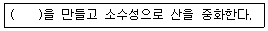
- 내염성 피막
- 탈수 피막
- 내수성 피막
- 내유성 피막
(정답률: 79%)
44. 자외선이 피부에 미치는 영향에 대한 설명으로 바르지 않은 것은?
- 자외선 노출에 의한 가장 심각한 만성 영향은 피부암이다.
- 피부암의 90% 이상은 햇볕에 노출된 신체 부위에서 발생한다.
- 백인과 흑인의 피부암 발생율의 차이는 크지 않다.
- 대부분의 피부암은 상피세포부위에서 발생한다.
(정답률: 75%)
45. 방진마스크에 대한 설명으로 올바르지 않은 것은?
- 가스 및 증기의 보호가 안 된다.
- 비휘발성 입자에 대한 보호가 가능하다.
- 필터 재질로는 활성탄이 가장 많이 사용된다.
- 포집효율이 높고 흡기, 배기저항이 낮은 것이 좋다.
(정답률: 60%)
46. 전신진동장애에 대한 내용으로 바르지 않은 것은?
- 전신진동 노출 진동원은 교통기관, 중장비차량 등이다.
- 전신진동 노출시에는 산소소비량과 폐환기량이 급감하여 특히 대뇌 혈류에 영향을 미친다.
- 전신진동은 100Hz까지 문제이나 대개는 30Hz에서 문제가 되고 60~90Hz에서는 시력장해가 온다.
- 외부진동의 진동수와 고유장기의 진동수가 일치하면 공명현상이 일어날 수있다.
(정답률: 39%)
47. 고온순화기전과 가장 거리가 먼 것은 무엇인가?
- 체온조절 기전의 항진
- 더위에 대한 내성 증가
- 열생산 감소
- 열방산능력 감소
(정답률: 50%)
48. 다음 중 귀덮개의 장단점으로 옿지 않은 것은?
- 착용법이 틀리는 일이 적다.
- 귀에 이상이 있을 때에도 사용할 수 있다.
- 고온작업장에서 착용하기가 어렵다.
- 귀마개보다 개인차가 크다.
(정답률: 80%)
49. 작업환경대책의 기본원리인 '대치'에 대한 내용으로 바르지 않은 것은?
- 야광시계의 자판을 라듐에서 인으로 대치한다.
- 금속 표면을 블라스팅할 때 사용재료로서 모래 대신 철 구슬을 사용한다.
- 소음이 많은 너트와 볼트작업을 리벳팅 작업으로 전환한다.
- 보온재로 석면 대신 유리섬유나 암면을 사용한다.
(정답률: 74%)
50. 레이저가 다른 광원과 구별되는 특징으로 바르지 않은 것은?
- 단일파장으로 단색성이 뛰어나다.
- 집광성과 방향조정이 용이하다.
- 단위 면적당 빛에너지가 크게 설계되어 있다.
- 위상이 고르고 간섭현상이 일어나지 않는다.
(정답률: 61%)
51. 저온의 영향에 따른 1차적 생리적 영향으로 옳은 것은?
- 말초냉각
- 피부혈관의 수축
- 혈압변화
- 식욕변화
(정답률: 67%)
52. 고압환경에서 2차적인 가압현상이라 볼 수 없는 것은 무엇인가?
- 질소마취 작용
- 산소중독 현상
- 질소기포 형성
- 이산화탄소 중독
(정답률: 72%)
53. 출력이 0.01W인 기계에서 나오는 음향파워레벨(PWL)은 몇 dB인가?
- 80dB
- 90dB
- 100dB
- 110dB
(정답률: 73%)
54. 국소진동에 의해 발생되는 레이노씨 현상(Raynaud's phenomenon)에 관한 설명 중 틀린 것은?
- 압축공기를 이용한 진동공구를 사용하는 근로자들의 손가락에서 주로 발생한다.
- 손가락에 있는 말초 혈관운동의 장해로 초래된다.
- 수근골에서의 탈석회화 작용을 유발한다.
- 추위에 노출되면 현상이 악화된다.
(정답률: 68%)
55. 다음의 전리방사선의 종류 중 투과력이 가장 강한 것은 무엇인가?
- 알파선
- 감마선
- X-선
- 중성자
(정답률: 75%)
56. 어떤 근로자가 음압수준이 100dB(A)인 작업장에 NRR이 27인 귀마개를 착용하였다. 이 근로자가 노출되는 음압수준은? (단, OSHA 방법으로 계산)
- 73.0dB(A)
- 86.5dB(A)
- 90.0dB(A)
- 95.5dB(A)
(정답률: 83%)
57. 열 실신(heat syncope)에 대한 설명으로 바르지 않은 것은?
- 열허탈증 또는 운동에 의한 열피비라고도 한다.
- 중근작업을 적어도 2시간 이상하였을 때 발생한다.
- 시원한 그늘에서 휴식시키고 염분과 수분을 경구로 보충한다.
- 심한 경우 중추신경장해로 혼수상태에 이르게 된다.
(정답률: 36%)
58. 방진재료에 대한 설명으로 바르지 않은 것은?
- 방진고무는 고무자체의 내부 마찰에 의해 저항을 얻을 수 있어 고주파 진동의 차진에 양호하다.
- 금속스프링은 감쇠가 거의 없으며 공진시에 전달율이 매우 크다.
- 공기스프링은 구조가 간단하고 자동제어가 가능하다.
- felt는 재질도 여러 가지이며 방진재료라기 보다는 강체간의 고체음 전파 억제에 사용한다.
(정답률: 49%)
59. 인공 조명시 고려해야 할 사항으로 바르지 않은 것은?
- 폭발과 발화성이 없을 것
- 광색은 주광색에 가까울 것
- 유해가스를 발생하지 않을 것
- 광원은 우상방에 위치할 것
(정답률: 76%)
60. 분진흡입에 따른 진폐증 분류 중 유기성 분진에 의한 진폐증은?
- 규폐증
- 용접공폐증
- 탄소폐증
- 농부폐증
(정답률: 64%)
4과목: 산업환기
61. 산업안전보건법령에서 규정한 관리대상 유해물질 관련 물질의 상태 및 국소배기장치 후드의 형식에 따른 제어풍속으로 틀린 것은?
- 외부식 측방 흡인형(가스상) : 0.5m/s
- 외부식 측방 흡인형(입자상) : 1.0m/s
- 외부식 상방 흡인형(가스상) : 1.0m/s
- 외부식 상방 흡인형(입자상) : 1.0m/s
(정답률: 50%)
62. 다음 중 후드의 선택지침으로 적절하지 않은 것은?
- 필요환기량을 최대화할 것
- 작업자의 호흡영역을 보호할 것
- 추천된 설계사양을 사용할 것
- 작업자가 사용하기 편리하도록 만들 것
(정답률: 78%)
63. 다음 중 송풍기의 풍량, 풍압 및 동력 간의 관계를 올바르게 나타낸 것은? (단, Q는 풍량, N는 회전속도, P는 풍압, W는 동력이다.)
- P∝N2
- W∝N
- Q∝N3
- Q∝N2
(정답률: 60%)
64. 1기압, 0℃에서 공기의 비중량을 1.293kgf/m3라고 할 때 동일 기압에서 23℃일 때 공기의 비중량은 약 얼마인가?
- 0.95kgf/m3
- 1.015kgf/m3
- 1.193kgf/m3
- 1.2⑤kgf/m3
(정답률: 64%)
65. 다음 중 전기집진장치에 대한 설명으로 바르지 않은 것은?
- 운전 및 유지비가 저렴하다.
- 기체상의 오염물질을 포집하는데 매우 유리하다.
- 넓은 범위의 입경과 분진농도에 집진효율이 높다.
- 초기 설치비가 많이 들고, 넓은 설치공간이 요구된다.
(정답률: 71%)
66. A사업장에서 적용중인 후드의 유입계수가 0.8이라면 유입손실계수는 약 얼마인가?
- 0.56
- 0.73
- 0.83
- 0.93
(정답률: 73%)
67. 다음 중 송풍기에 대한 설명으로 옳은 것은?
- 프로펠러 송풍기는 구조가 가장 간단하지만, 많은 양의 공기를 이송시키기 위해서는 그 만큼의 많은 비용이 소요된다.
- 후향 날개형 송풍기는 회전날개가 회전방향 반대편으로 경사지게 설계되어 있어 풍분한 압력을 발생시킬 수 있고, 전향 날개형 송풍기에 비해 효율이 떨어진다.
- 저농도 분진함유공기나 금속성이 많이 함유된 공기를 이송시키는데 많이 이용되는 송풍기는 방사 날개형 송풍기(평판형 송풍기)이다.
- 동일 송풍량을 발생시키기 위한 전향 날개형 송풍기의 임펠러 회전속도는 상대적으로 낮기 때문에 소음문제가 거의 발생하지 않는다.
(정답률: 52%)
68. 다음 중 덕트 내에서 피토관으로 속도압을 측정하여 반송속도를 추정할 때 반드시 필요한 자료가 아닌 것은 무엇인가?
- 횡단측정 지점에서의 덕트 면적
- 횡단측정 지점에서의 공기 중 유해물질의 조성
- 횡단지점에서 지점별로 측정된 속도압
- 횡단측정 지점과 측정시간에서의 공기의 온도
(정답률: 53%)
69. 유해작용이 다르고, 서로 독립적인 영향을 나타내는 물질 3종류를 다루는 작업장에서 각 물질에 대한 필요 환기량을 계산한 결과 120m3/min , 150m3/min , 180m3/min이었다. 이 작업장에서의 필요 환기량은 얼마인가?
- 120m3/min
- 150m3/min
- 180m3/min
- 450m3/min
(정답률: 72%)
70. 속도압은 , 비중량은 , 수두는 h, 중력가속도를 g라 할 때 다음 중 유체의 관내 속도를 구하는 식으로 옳은 것은?
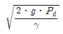
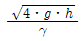
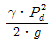
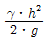
(정답률: 72%)
71. 다음 중 전압, 정압, 속도압에 관한 설명으로 옳지 않은 것은 무엇인가?
- 속도압과 정압을 합한 값을 전압이라 한다.
- 속도압은 공기가 정지할 때 항상 발생한다.
- 속도압이란 정지상태의 공기를 일정한 속도로 흐르도록 가속화시키는데 필요한 압력을 말하며, 공기의 운동에너지에 비례한다.
- 정압은 사방으로 동일하게 미치는 압력으로 공기를 압축 또는 팽창시키며, 공기흐름에 대한 저항을 나타내는 압력으로 이용된다.
(정답률: 74%)
72. 다음 중 국소배기에서 덕트의 반송속도에 대한 설명으로 틀린 것은 무엇인가?
- 분진의 경우 반송속도가 낮으면 덕트 내에 분진이 퇴적될 우려가 있다.
- 가스상 물질의 반송속도는 분진의 반송속도보다 늦다.
- 덕트의 반송속도는 송풍기 용량에 맞춰 가능한 높게 설정한다.
- 같은 공정에서 발생되는 분진이라도 수분이 있는 것은 반송속도를 높여야 한다.
(정답률: 60%)
73. 직경이 250mm인 직선 원형관을 통하여 풍량 100m3/min의 표준상태인 공기를 보낼 때 이 덕트 내의 유속은 약 얼마인가?
- 13.32m/s
- 17.35m/s
- 26.44m/s
- 33.95m/s
(정답률: 49%)
74. 주관에 45°로 분지관이 연결되어 있을 때 주관 입구와 속도압은 10mmH2O로 같고, 압력손실계수는 각각 0.2와 0.28이다. 이 때 주관과 분지관의 합류로 인한 압력손실은 약 얼마인가?
- 3mmH2O
- 5mmH2O
- 7mmH2O
- 9mmH2O
(정답률: 47%)
75. 국소배기장치의 덕트를 설계하여 설치하고자 한다. 덕트는 직경 200mm의 직관 및 곡관을 사용하도록 하였다. 이 때 마찰손실을 감소시키기 위하여 극관부위의 새우곡관등은 최소 몇 개 이상이 가장 적당한가?
- 2
- 3
- 4
- 5
(정답률: 60%)
76. 국소배기장치가 효과적인 기능을 발휘하기 위해서는 후드를 통해 배출되는 것과 같은 양의 공기가 외부로부터 보충되어야 한다. 이것을 무엇이라 하는가?
- 테이크 오프(take off)
- 충만실(plenum chamber)
- 메이크업 에어(make up air)
- 인 앤 아웃 에어(in & out air)
(정답률: 79%)
77. 다음 중 신체의 열 생산과 주변 환경 사이의 열교환식(heat balance equat ion)과 관련이 없는 것은 무엇인가?
- 대류
- 증발
- 복사
- 전도
(정답률: 71%)
78. 일반적으로 사용하고 있는 흡착탑 점검을 위하여 압력계를 이용하여 흡착탑 차압을 측정하고자 한다. 다음 중 차압의 측정방법과 측정 범위로 가장 적절한 것은?
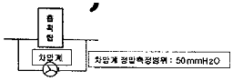
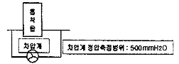
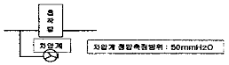
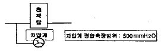
(정답률: 64%)
79. 일반적으로 국소배기장치의 기본 설계를 위한 다음 과정 중 가장 먼저 실시하여야 하는 것은?
- 제어속도 결정
- 반송속도 결정
- 후드의 크기 결정
- 배관의 배치와 설치장소 결정
(정답률: 60%)
80. 자유공간에 떠 있는 직경 20cm인 원형개구 후드의 개구면으로부터 20cm 떨어진 곳의 입자를 흡인하려고 한다. 제어풍속을 0.8m/s으로 할 때 필요환기량은 약 얼마인가?
- 5.8m3/min
- 10.5m3/min
- 20.7m3/min
- 30.4m3/min
(정답률: 60%)